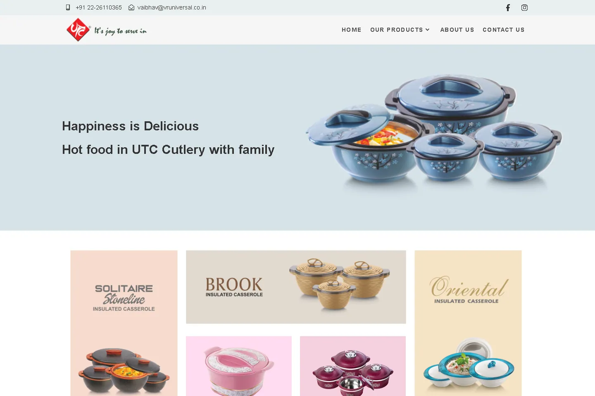

What is verified.
Umair's project record identifies UTC India as a WordPress delivery. The public website presents insulated ware and kitchen product categories including hot pots, premium hotpots, stainless steel, family sets, picnic sets, and a microwave series.
No design ownership, project dates, team size, revenue impact, or performance metric is documented for this specific project, so none is claimed.
A browseable product presence.
The available project brief does not preserve the original client problem. The delivered site's visible objective is clear: introduce the company, organize a broad product catalogue, and provide direct contact information for prospective buyers.
What can — and cannot — be reconstructed.
No original research notes, wireframes, or planning documents are available. The live information architecture shows practical grouping around product categories, an about route, and contact access. That is an observation of the output, not a claim about the original process.
WordPress delivery.
UTC India uses WordPress for its product-catalogue experience.
- Technology: WordPress.
- Visible output: category-led product browsing.
Documented limits matter.
Project-specific challenges and solutions are not available in the project brief. Instead of turning ordinary WordPress patterns into a fictional story, this case study keeps the technical boundary explicit and lets the live work carry the proof.
No borrowed claims.
Umair's broader work includes website speed optimization, PageSpeed use, and SEO best practices. Those responsibilities are not attributed directly to UTC India, so this case study does not claim a score, audit, test plan, or deployment process for this project.
A public, usable catalogue.
The website remains publicly accessible at the listed domain. That is the only result claimed here; traffic, lead, conversion, and business metrics were not provided.
Visit live websiteFor a similar content-managed project, see WordPress development in Mumbai.